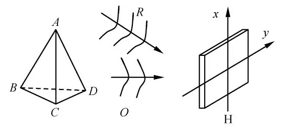
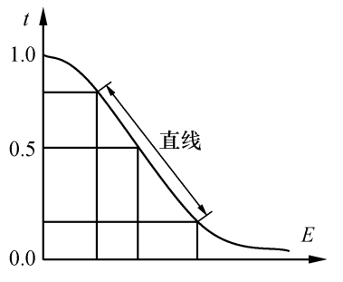
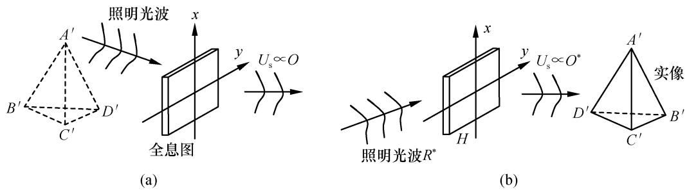
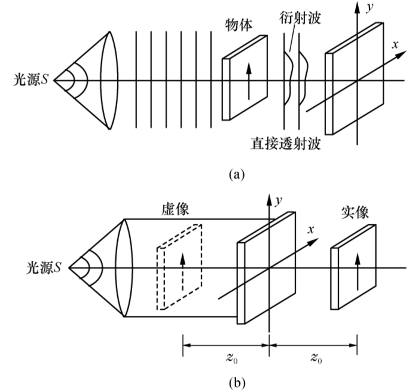
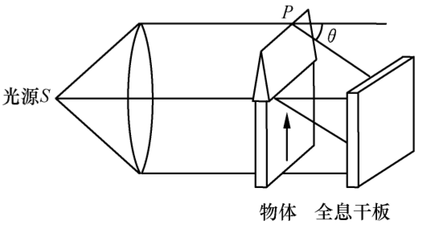

普通照相是根据几何光学成像原理，记录下光波的强度（即振幅），将空间物体成像在一个平面上，由于丢失了光波的相位，因而失去了物体的三维信息.
若能记录物光波的振幅于相位，并在一定条件下再现，则可看到包含物体全部信息的三维像，即使物体已经移开，仍可看到原始物体本身具有的全部现象，包括三维感觉与视差.
全息照相术是英籍匈牙利科学家Dennis Gabor发明的，1947年他从事电子显微镜研究，当时电子显微镜的理论分辨率极限是0.4nm，由于丢失了光波的相位，实际只能达到1.2nm，比分辨原子晶格所要求的分辨率\(0.2nm\)差很多.
理论上的光学分辨率公式\(\delta = (0.61\lambda)/NA\)是在相位无畸变的情况下推导出的，而若相位存在畸变时，实际分辨率可能无法达到理论分辨率，这就是相位与光学分辨率的关系
这主要是由于电子透镜的像差比光学透镜大得多，从而限制了分辨率的提高.
电子透镜不是传统的玻璃透镜，它通过电场力或磁场力改变电子的运动方向.
为此，Gabor设想：记录一张不经任何透镜的、用物体衍射的电子波制作曝光图片（即全息图），是它能保持物体的振幅和相位的全部信息，任何用可见光照明全息图来得到放大的物体像.
由于光波波长比电子波波长高5个数量级，这样，再现时物体的放大率\(M = \lambda_光/\lambda_{电子}\)就可获得\(10^5\)倍而不出现任何像差，所以这种无透镜两步成像的过程可期望获得更高的分辨率.
根据这一设想，他在1948年提出了一种用光波记录物光波的振幅与相位的方法，并用实验证实了这一想法，从而开辟了光学的一个崭新邻域，他也因此获得1971年的诺贝尔物理学奖.
第一代全息图从1948年Gabor提出全息照相的思想开始，一直到50年代末期，全息照相都是采用汞灯作为光源，且是所谓的同轴全息图，其\(\pm 1\)级衍射波是分不开的，即存在所谓的“孪生像”问题，不能获得好的全息像.
这是第一代全息图，是全息术的萌芽时期.
第一代全息图存在两个严重问题：
1960年激光的出现，提供了一种高相干性光源.
1962年美国科学家Leith与Upatnieks将通信理论中的载频概念推广到空域中，提出了离轴全息术.
其利用离轴的参考光与物光干涉形成全息图，再利用离轴的参考光照射全息图，使全息图产生三个在空间互相分离的衍射分量，其中一个复制出原始物光.
这样，第一代全息图的两大难题宣告解决，产生了激光记录、激光再现的第二代全息图，从而使全息术在沉睡了十几年后得以新生，进入迅速发展年代，相继出现了多种全息方法，并在信息处理、全息干涉计量、全息显示、全息光学元件等邻域得到广泛应用.
由此可见，高相干度激光的出现，是全息术发展的巨大动力.
第三代全息图由于激光再现的全息图失去了色调信息，人们开始致力于研究第三代全息图.
第三代全息图是利用激光记录和白光再现的全息图，例如反射全息、像全息、彩虹全息及模压全息等，在一定条件下赋予全息图以鲜艳的色彩.
第四代全息图激光的高度相干性，要求全息拍摄过程中各个元件、光源与记录介质的相对位置严格保持不变，且相干噪声也很严重，这给全息术的实际使用带来了种种不便.
于是，科学家们又回过头来继续探讨白光记录的可能性.
第四代全息图可能是白光记录和白光再现的全息图，它将使全息术最终走出实验室，进入广泛的实用领域，目前已开始取得进展
除了用光学干涉方法记录全息图，还可以用计算机和绘图设备画出全息图，这就是计算全息（computer-generated hologram，CGH）.
计算全息是利用数字计算机来综合的全息图，不需要物体的实际存在，只需要物光波的数学描述，因此具有很大的灵活性.
全息术不仅可以用于光波波段，还能用于电子波、X射线、声波与微波波段.
实际上，Leith与Upatnieks的离轴全息概念就是来自于微波邻域的旁视雷达-微波全息图.
正如Gabor在其荣获诺贝尔奖时的演说中所指出的，Leith在雷达中用的电磁波长比光波长10万倍，而Gabor本人在电子显微镜中所用的电子波长又比光波短10万倍.
他们分别在像差\(10^{10}\)倍的两个方向上发展了全息照相术，这说明科学的发展总是相互渗透、相互影响的.
用干涉方法得到的、像平面上光波的全部信息（振幅与相位），存在于物像之间光波经过的任一平面上.
为什么需要记录相位：
设一点光源发出球面波：
$$E = \frac{A_0}{r}e^{-i(\omega t -kr)}$$其等相位面为：
$$\omega t - kr = C$$在固定时刻\(t\)，其等相位面为：
$$r = C$$即一球面.
现在还理解不来，目前理解到的程度是：记录相位->从不同角度看有不同的效果.
为什么直接测量光强无法得到全部信息：
[设]物光复振幅为：
$$U_o(x,y) = A_oe^{i\varphi_o(x,y)}$$探测器记录的光强为：
$$I(x,y) = |U_o(x,y)|^2 = A_o^2(x,y)$$为什么干涉能够获得相位信息
引入一束已知相位的参考光：
$$U_r(x,y) = A_re^{i\varphi_r(x,y)}$$两束光发生干涉，则：
$$I(x,y) = |U_o(x,y) + U_r(x,y)|^2 = A_o^2 + A_r^2 + 2A_oA_r\cos(\varphi_o - \varphi_r)$$这是包含相位的.
已知物像之间光波经过的任意一个平面的复振幅，可以计算出像面上光的复振幅，进而计算出像面上的光强分布.
若在这些平面上能记录携带物体全部信息的波前，并在一定条件下再现（重现）物光波的波前，那么从效果上看，相当于在记录时被“冻结”在记录介质上的波前从全息图上“释放”出来，然后继续向前传播，以产生一个可观察的三维像.
若不考虑记录过程和再现过程在时间上的间隔与空间上存在的差异，再现光波与原始光波毫无区别.
因此，由光波传递信息而构成物体的过程被分解成两步：
波前记录与波前再现是全息术的核心.
在全息术中通常使用的波是光波，一般将它称为光全息术.
根据使用波的不同，又有微波全息术、声波全息术等.
物光光波前信息包括光波的振幅与相位.
现有的所有记录介质仅对光强产生响应，因此必须设法将相位信息转换成强度的变化才能记录下来.
干涉法是将空间相位调制转换为空间强度调制的标准方法.
干涉就是将相位转换为强度图样.
波前记录过程如图所示：

[设]传播到记录介质上的物光波前为：
$$\boldsymbol{O}(x,y) = O(x,y)e^{-i\varphi_O(x,y)}$$[设]传播到记录介质上的参考光波波前为：
$$\boldsymbol{R}(x,y) = R(x,y)e^{-i\varphi_R(x,y)}$$则被记录的总光强为：
波前函数表征的是复振幅.
相干叠加->复振幅叠加
常用的记录介质是银盐感光干板，对两个波前的干涉图样曝光后，经显影、定影处理得到全息图.
因此，全息图实际上就是一副干涉图.
总光强表达式中的前两项为物光与参考光的强度分布.
其中参考光波一般选用较为简单的平面波或球面波，因而\(|\boldsymbol{R}(x,y)|\)为常数或近似于常数；
而\(|\boldsymbol{O}(x,y)|\)为物光波在底片上造成的强度分布，是不均匀的，但实验上一般都让它比参考光波弱得多.
前两项基本上是常数，作为偏置项，第三项\(2R(x,y)O(x,y)\cos[\varphi_R(x,y) - \varphi_O(x,y)]\)为干涉项，包含有物光波的振幅与相位信息.
参考光波作为一种高频载波，其振幅与相位均受到物光波的调制（调幅与调相）.
参考光波的作用正好完成将物波波前的相位分布转换为干涉条纹强度分布的任务.
作为全息记录的感光材料很多，最常用的由细微粒卤化银乳胶涂敷的超微粒干板，简称全息干板.
假定全息干板的作用相当于一个线性变换器，它将曝光期间内的入射光强线性地变换为显影后负片的振幅透过率，为此必须将曝光量变化范围控制在全息干板\(t-E\)曲线的线性段内.
“曝光期间”是指波前记录过程中，记录介质受到物光与参考光照射的时间段.
如图所示为负片的\(t-E\)曲线，横坐标\(E\)表示曝光量，纵坐标\(t\)表示振幅透过率.

负片：经过曝光和显影处理后，影像明暗关系与原物光强分布相反的感光材料.
曝光量\(E\)与光强\(I\)成正比，即\(E = \tau I\).
此外，我们还必须假定全息干板具有足够高的分辨率，以便能记录全部入射的空间结构.
这样，全息图的振幅透过率就可记为：
$$t(x,y) = t_0 + \beta E = t_0 + \beta[\tau I(x,y)] = t_0\beta'I(x,y)$$[设]参考光的强度在整个记录表面是均匀的，则：
$$t(x,y) = t_0 + \beta'(|\boldsymbol{R}|^2 + |\boldsymbol{O}|^2 + \boldsymbol{R}^*\boldsymbol{O} + \boldsymbol{R}\boldsymbol{O}^*) = t_b + \beta'(|\boldsymbol{O}|^2 + \boldsymbol{R}^*\boldsymbol{O} + \boldsymbol{R}\boldsymbol{O}^*)$$若全息图的记录未能满足上面指出的线性记录条件，将影响再现光波的质量.
用一束相干光波照射全息图，假定其在全息图平面上的复振幅分布为\(\boldsymbol{C}(x,y)\)，则透过全息图的光场（透射场式）为：
$$\begin{align} \boldsymbol{U}(x,y) &= \boldsymbol{C}(x,y)t(x,y)\\ &= t_b\boldsymbol{C} + \beta'\boldsymbol{O}\boldsymbol{O}^*\boldsymbol{C} + \beta'\boldsymbol{R}^*\boldsymbol{C}\boldsymbol{O} + \beta'\boldsymbol{R}\boldsymbol{C}\boldsymbol{O}^*\\ &= \boldsymbol{U}_1 + \boldsymbol{U}_2 + \boldsymbol{U}_3 + \boldsymbol{U}_4 \end{align}$$全息图当成一个光学元件（系统），输入为再现光波，输出为重建后的光波前.
上式可等效地写为：
$$A_1\boldsymbol{C} + A_2\boldsymbol{O} + A_3\boldsymbol{O}^*$$透射场的写法表明：应将\(\boldsymbol{C}',~\boldsymbol{O},\boldsymbol{O}^*\)看作为波前函数，它们分别代表照明光波的直接透射波、物光波及其共轭波，而它们各自的系数分别看作一种波前变换或一种运算操作.
一般而言，若它们各自的系数中含有二次相位因子，则说明被作用的波前相当于经过了一个透镜的聚散.
若系数中出现了线性因子，则说明被作用的波前经过了一个棱镜的偏转；
若系数中既含有二次相位因子，又含有线性相位因子，则说明被作用的波前相继经过透镜的聚散与棱镜的偏转.
究竟是哪种情况，就要看全息记录时参考波与再现时再现波（照明波）间的关系.
线性相位因子：\(e^{i(ax + by + c)}\)
二次相位因子：\(e^{i(x^2 + y^2)}\)
\(\boldsymbol{U}_1\)的系数\(t_b = t_0 + \beta R^2\)：其中\(t_0\)为常数，由于参考波通常采用简单的球面波或平面波，故\(R\)近似为常数，于是\(\boldsymbol{U}_1\)中两项系数的作用仅仅改变照明光波\(\boldsymbol{C}\)的振幅，并不改变\(\boldsymbol{C}\)的特性.
第二项\(\boldsymbol{U}_2\)\(\boldsymbol{U}_2\)的系数中含有\(O^2\)，是物光波单独存在时在底片上造成的强度分布，其不是均匀的，故\(\boldsymbol{U}_2 = \beta'O^2\boldsymbol{C}\)代表振幅受到调制的照明波前，这实际上是\(\boldsymbol{C}\)波经历\(O^2(x,y)\)分布的一张底片的衍射，使照明波多少有些离散而出现杂光，是一种“噪声”信息.
这是一个麻烦的问题，但实验上可以想些办法，如适当调整照明度，使\(O^2\)与\(R^2\)相比成为次要因素.
总之，\(\boldsymbol{U}_1\)与\(\boldsymbol{U}_2\)基本保留了照明光波的特性.
这一项称为全息图衍射场的\(0\)级波.
第三项\(\boldsymbol{U}_3\)对于\(\boldsymbol{U}_3\)项：当照明光波为与参考光波完全相同的平面波或球面波时（即\(\boldsymbol{C} = \boldsymbol{R}\)），透射光波中的第三项为：
$$\boldsymbol{U}_3(x,y) = \beta'R^2\boldsymbol{O}(x,y)$$由于\(R^2\)是均匀的参考光强度，所以除了相差一个常数因子外，\(\boldsymbol{U}_3\)是原来物波波前的准确再现，它与在波前记录时原始物体发出的光波的作用完全相同.
当这一光波传播到观察者眼睛里时，可以看到原物的形象.
由于原始物体的光波是发散的，故观察到的是物体的虚像，如图所示.

这一项称为全息图衍射场的\(+1\)级波.
第四项\(\boldsymbol{U}_4\)透射光波中的第四项为：
$$\boldsymbol{U}_4(x,y) = \beta'\boldsymbol{R}^2\boldsymbol{O}^*(x,y)$$当照明光波与参考光波完全相同时，\(\boldsymbol{R}^2\)中的相位因子一般无法消除.
若二者都是平面波，则其相位因子是一个线性相位因子，使\(\boldsymbol{U}_4\)波成为并不严格与原物镜像对称的会聚波，人们在偏离镜像对称位置的某处仍可能接收到一个原物的实像.
若照明光波与参考光波为球面波，则\(\boldsymbol{R}^2\)中有二次相位因子使\(\boldsymbol{O}^*\)波发生聚散，随之发生位移与缩放，人们在偏离镜像对称位置的某处可能接收到一个与原物发小不同的实像.
称\(\boldsymbol{U}_4\)项为全息图衍射场中的-1级波.
只有当照明光波与参考光波均为正入射的平面波时，入射到全息上的相位可取0.
此时\(\boldsymbol{U}_3\)与\(\boldsymbol{U}_4\)中的系数均为实数，无附加相位因子，全息图衍射场中的\(\pm 1\)级光波才严格镜像对称.
由共轭光波\(\boldsymbol{U}_4\)产生的实像，对观察者而言，该实像的凹凸与原物体正好相反，因而给人以某种特殊感觉，这种像称为赝像.
照明光波为参考光波共轭波的情况若照明光波\(\boldsymbol{C}(x,y)\)恰为参考光波的共轭波\(\boldsymbol{R}^*(x,y)\)，则再现波场的第三项与第四项为：
此时\(\boldsymbol{U}_4\)再现了物光波波前的共轭波，给出原始物体的一个实像，如上图(b)所示.
\(\boldsymbol{U}_3\)再现的是物光波前，故给出原始物体的一个虚像，由于受\(\boldsymbol{R}^*\boldsymbol{R}^*\)的调制，虚像也会变形.
第二项应该是\(R^2\).
若光场表达式中包含的是\(\boldsymbol{O}\)，就是再现物光波波前；若光场表达式中包含的是\(\boldsymbol{O}^*\)，再现的就是物光波波前的共轭.
怎么看出给出的是实像还是虚像的？
为什么会变形？
波前记录是物波波前与参考波前的干涉记录，它使振幅和相位调制的信息变成干涉图的强度调制.
这种全息图被再现光波照射时，它又起一个衍射光屏的作用，正是由于光波通过这种衍射光屏而产生的衍射效应，使全息图上的强度调制信息还原为波前的振幅与相位信息，再现了物光波前.
因此，波前记录与波前再现的过程，实质上是光波的干涉与衍射的结果.
无论选择哪一种再现方式，除了我们感兴趣的那个特定场分量，即\(\boldsymbol{C} = \boldsymbol{R}\)时的\(\boldsymbol{U}_3\)项与\(\boldsymbol{C} = \boldsymbol{R}\)时的\(\boldsymbol{U}_4\)项外，总伴随着三项附加的场分量.
因此，将波前记录与波前再现的过程看成一个系统变化，以记录的物波场为输入，以再现时的再现波场为输出，这个系统所实现的变换是高度非线性的.
但是，若将记录时的光波前作为输入，再现时的透射场的单项分量\(\boldsymbol{U}_3\)式或\(\boldsymbol{U}_4\)式作为输出，那么这样定义的系统就是一个线性系统.
采用线性变换的概念将有助于简化对全息成像过程的分析.
下面将要介绍的离轴全息，为透射场中满足线性变换关系的那个特定场分量的分离，提供了有效手段.
随着光学全息技术的发展，出现了多种类型的全息图，从不同的角度考虑，全息图可以有不同的分类方式.
从物光与参考光的位置是否同轴考虑，可以分为同轴全息和离轴全息；
从记录时物体与全息图片的相对位置分类，可分为Fresnel全息图、像面全息图与Fourier变换全息图；
从记录介质的厚度考虑，可分为平面全息图与体积全息图.
只有使全息图衍射光波中各项有效分离，才能得到可供利用的再现像，这和参考光的方向选取有着直接关系.
根据物光波与参考光波的相对位置，全息图可分为同轴全息图和离轴全息图.
盖伯最初提出和实现的全息图就是一种同轴全息图，记录盖伯全息图的光路如图(a)所示：

[设]相干平面波照明一个高透明度的物体，透射光场可表示为：
$$t(x_0, y_0) = t_0 + \Delta t(x_0, y_0)$$因此透射光场可以看成由两项组成：
一项是由\(t_0\)表示的、强而均匀的平面波，它相当于波前记录时的参考波；
另一项是\(\Delta t\)所代表的弱散射波，它相当于记录波前时的物光波.
在距离物体\(z_0\)处放置全息图干板时的曝光光强为：
$$I(x,y) = |\boldsymbol{R} + \boldsymbol{O}(x,y)|^2 = R^2 + |\boldsymbol{O}(x,y)|^2 + \boldsymbol{R}^*\boldsymbol{O}(x,y) + \boldsymbol{R}\boldsymbol{O}^*(x,y)$$线性记录条件下，得到的全息图振幅透过率正比于曝光光强，即：
$$t(x,y) = t_b + \beta'(|\boldsymbol{O}|^2 + \boldsymbol{R}^*\boldsymbol{O} + \boldsymbol{R}\boldsymbol{O}^*)$$若用振幅为\(C\)的平面波垂直照明全息图，则透射光场可用四项场分量之和表示为：
$$\boldsymbol{U}(x, y) = Ct(x,y) = Ct_b + \beta'C\left\lvert\boldsymbol{O}(x,y)\right\rvert^2 + \beta'\boldsymbol{R}^*C\boldsymbol{O}(x,y) + \beta\boldsymbol{R}C\boldsymbol{O}^*(x,y)$$第一项：透过全息图的受到均匀衰减的平面波；
第二项：正比于弱的散射光的光强，可忽略不计；
第三项：正比于\(\boldsymbol{O}(x,y)\)，再现了原始物光波前，产生原始物体的一个虚像；
第四项：正比于\(\boldsymbol{O}^*(x,y)\)，将在全息图的另一侧与虚像对称的位置产生物体的实像，如上图(b)所示.
上述四项场分量都在同一方向上传播，其中直接透射光大大降低了像的衬度，且虚像与实像的距离为\(2z_0\)，构成不可分离的孪生像.
为什么不可分离？
当对实像聚焦时，总伴随一离焦的虚像，反之亦然.
孪生像的存在也大大降低了全息像的质量.
同轴全息的最大局限性还在于我们必须假定物体是高度透明的，否则第二项场分量将不能忽略.
这一假定极大限制了同轴全息图的应用范围.
为消除全息图中孪生像的干扰，1962年，美国密执安大学雷达实验室的利思和乌帕特立克斯提出了离轴全息图，也称为偏斜参考光全息图.
记录离轴全息图的光路如图所示：

准直光束一部分直接照射透射振幅透射率为\(t_0(x,y)\)的物体，另一部分经物体之上的棱镜\(P\)偏折，以倾角\(\theta\)投射到全息干板上.
全息干板上的振幅分布应该是物体透射波与倾斜参考波叠加的结果，即：
$$\boldsymbol{U}(x,y) = Ae^{-i2\pi\alpha y} + \boldsymbol{O}(x,y)$$其中参考波的空间频率\(\alpha = \sin\theta/\lambda\)，底片上的强度分布为：
$$I(x,y) = A^2 + |\boldsymbol{O}(x,y)|^2 + A\boldsymbol{O}(x,y)e^{i2\pi\alpha y} + A\boldsymbol{O}^*(x,y)e^{-i2\pi\alpha y}$$